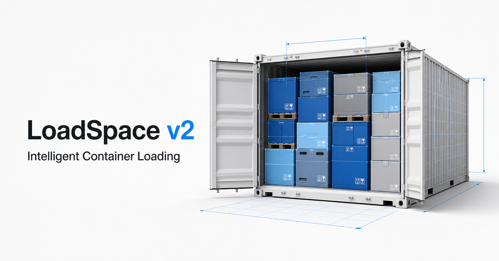

JUAN.HJLEE Portfolio
AI와 함께 바이브 코딩으로 이것저것 만들고 있는 아마추어 개발자입니다.
WINDOWS APP
온하루 · ONHARU
Google·Microsoft·PC 일정을 한곳에 모아 바탕화면에서 확인하는 Windows 달력입니다.
- 현재 버전
- 2.2.26
- 지원
- Windows 10·11 64비트
- 이용
- 무료



CONTAINER LOADING TOOL
Cubestow
화물 정보로 컨테이너 배치안을 만들고 적재율, 중량 분포와 고정 조건을 검토합니다.
- 3D 적재 결과와 작업 순서
- 중량·축하중·바닥 하중 검토
- CTU Code 기준의 고정 계획
LOGISTICS KNOWLEDGE BASE
Logistics Library
국제 물류 규정의 공식 원문과 한국어 해설을 함께 살펴보는 실무 자료 프로젝트입니다.
- CTU Code 원문과 한국어 해설
- EU 배터리 규정과 적용 일정
- 현장에서 확인할 체크리스트


LOTTO DATA TOOL
6/45 LAB
역대 당첨 기록을 살펴보고 좋아하는 숫자를 반영해 번호 조합을 만드는 로또 데이터 도구입니다.
- 회차별 당첨 번호와 통계 탐색
- 좋아하는 숫자를 반영한 조합 생성
- 구입 번호 기록과 당첨 결과 확인